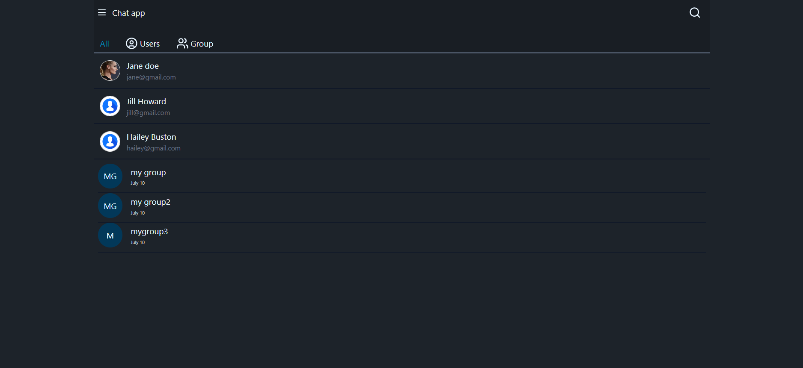
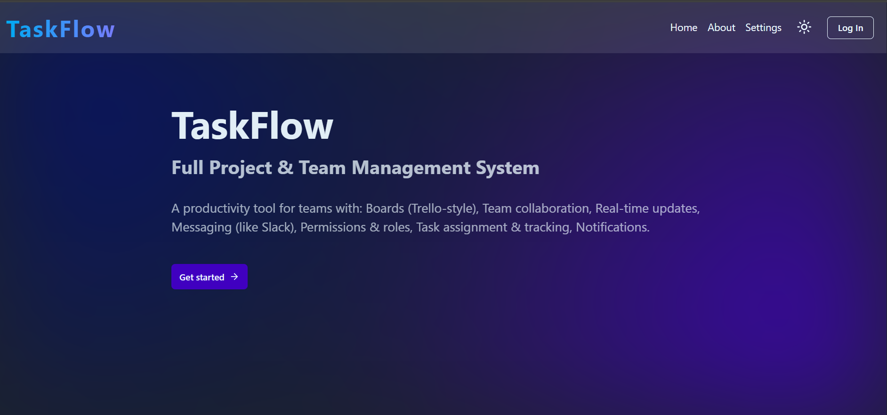
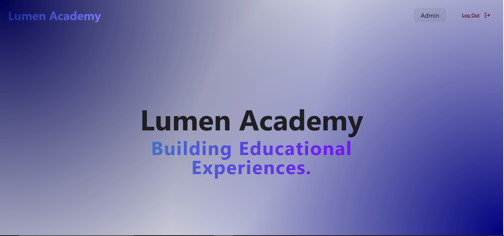
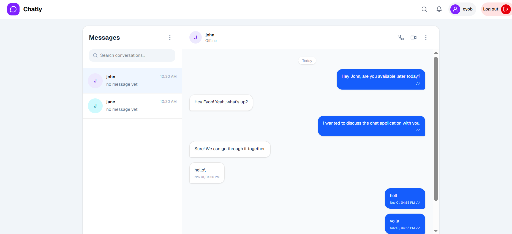
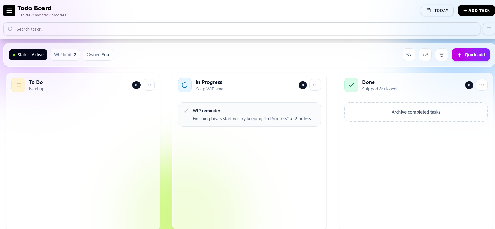

I create modern web applications with cutting-edge technologies and exceptional user experiences.
Hi, I’m Eyob Tilahun, a passionate Full-Stack Developer who loves building clean, user-friendly, and scalable applications. I specialize in the MERN stack (MongoDB, Express, React, Node.js) and enjoy turning complex problems into simple, elegant solutions.
Over the past projects, I’ve worked on: 💬 Real-time applications (chat apps with Socket.IO) ✅ Task & project management tools 🎨 Interactive UIs with modern libraries like TailwindCSS, ShadCN, and Framer Motion.
When I’m not coding, I’m exploring new tech trends, refining my UI/UX design skills, or collaborating on exciting projects that push my creativity and problem-solving skills. My goal is to keep growing as a developer while building products that make a real impact. 🚀

ChatMe is a real-time messaging application that enables seamless communication between users. It supports instant message delivery, organized conversations, and a modern, responsive interface designed for smooth user experience. The application focuses on speed, reliability, and intuitive design — providing users with a familiar chat experience similar to modern messaging platforms. mostly Inspired By Telegram

TaskFlow is a full-featured project and team management platform designed to help teams organize work efficiently across multiple workspaces. It provides structured collaboration tools, role-based access control, milestone tracking, and task assignment to streamline team productivity. The platform allows organizations to create separate workspaces, manage multiple projects within each workspace, and coordinate team members with clearly defined roles and responsibilities. TaskFlow's intuitive interface and comprehensive features make it an ideal solution for teams of all sizes looking to enhance their project management capabilities.

Lumen Web App is a full-stack online examination platform designed to simplify the creation, management, and execution of live exams. It enables educators and administrators to upload questions, organize structured question pools, and conduct timed live assessments with real-time monitoring and automated evaluation. The system is built to handle structured academic workflows — from question management to live exam delivery — while ensuring performance, reliability, and a smooth user experience.

Chatly is a real-time messaging application built with TypeScript that makes it easy for users to connect and communicate. It features a clean, responsive interface with instant messaging, online status indicators, and a smooth chat experience across devices.

A lightweight Kanban tool for organizing tasks, planning events, and keeping track of progress. It allows users to create and manage tasks, move them between columns, and stay organized through a simple, intuitive interface.
Have an idea, a project, or an opportunity you'd like to discuss? Send me a message and I'll get back to you.